PET-G10 · Leitura Científica para Monitores
Assista ao Dr. Seyfried explicar por que o câncer pode ser melhor compreendido como uma doença do metabolismo mitocondrial — e não apenas como um problema genético. Discute GKI, Efeito Warburg, dieta cetogênica e novas estratégias terapêuticas.
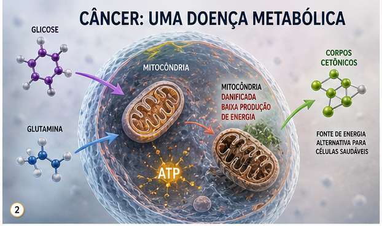
Dr. Thomas N. Seyfried, PhD — Professor de Biologia, Boston College.
Uma linha editorial — não necessariamente cronológica — do mais acessível ao mais programático. Sugerimos essa ordem para monitores que chegam ao tema pela primeira vez.
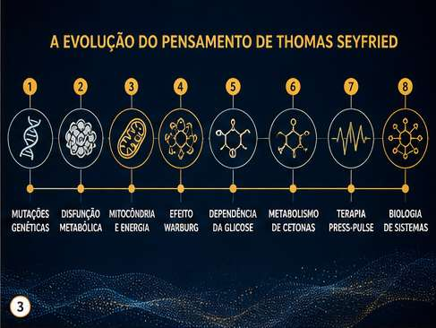
Durante décadas, o câncer foi categorizado como doença genética — mutações em oncogenes e genes supressores de tumor. Mas evidências crescentes questionam essa visão dominante.
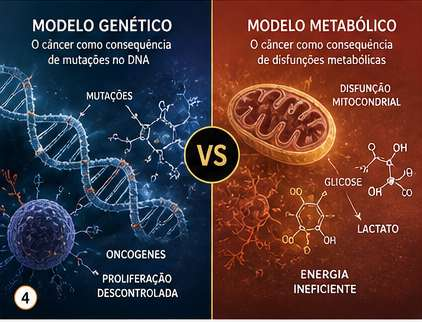
Mutações no DNA nuclear causam proliferação descontrolada. Oncogenes ativados e genes supressores silenciados dirigem o tumor. Base para quimioterapia e terapias-alvo moleculares.
Disfunção mitocondrial precede as mutações genéticas. A respiração celular insuficiente força as células a fermentar glicose — o Efeito Warburg. As mutações seriam consequência, não causa.
O artigo da EBioMedicine destaca que muitos oncogenes e genes supressores afetam fundamentalmente três vias metabólicas: glicólise aeróbia, glutaminólise e metabolismo de um carbono — sugerindo que o câncer é, em essência, uma reprogramação metabólica.
Em condições normais, as células produzem energia (ATP) via fosforilação oxidativa mitocondrial — processo eficiente que usa oxigênio. Células cancerosas, mesmo em presença de oxigênio, preferem fermentar glicose, produzendo lactato.
Esse "desperdício" energético fornece os blocos de construção — aminoácidos, nucleotídeos, lipídeos — necessários para a rápida divisão celular.
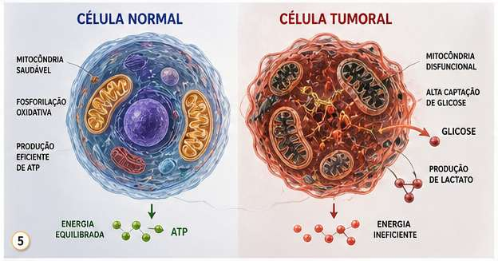
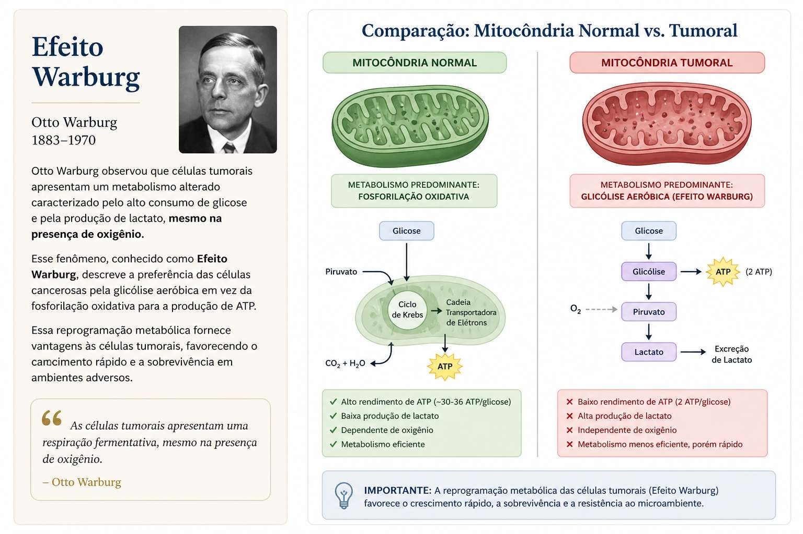
Seyfried propõe que a insuficiência respiratória mitocondrial é o evento primário, e que as mutações genéticas são consequência dessa disfunção energética — não sua causa.
Se o câncer é primariamente metabólico, estratégias que privam as células tumorais de glicose e glutamina — como a dieta cetogênica terapêutica — tornam-se intervenções biologicamente racionais.
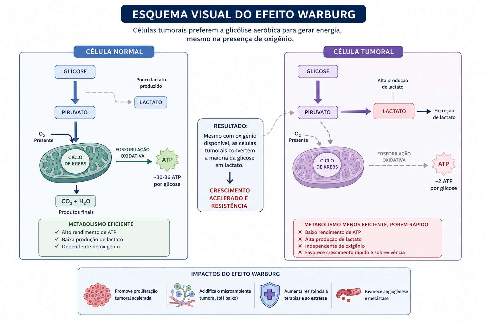
Desenvolvido por Seyfried et al. (Boston College, 2015) e publicado no Nutrition & Metabolism, o GKI é um biomarcador quantitativo simples para avaliar a eficácia de terapias metabólicas no câncer.
Como calcular: O GKI combina duas medições de sangue capilar — glicosímetro + cetômetro — em uma única razão.
Células normais adaptam-se facilmente a corpos cetônicos como combustível; células tumorais, fermentadoras obrigatórias, não conseguem. Estudos mostram retração ou estabilização tumoral com GKI ≤ 2.0.
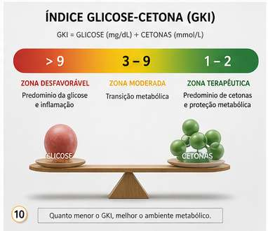
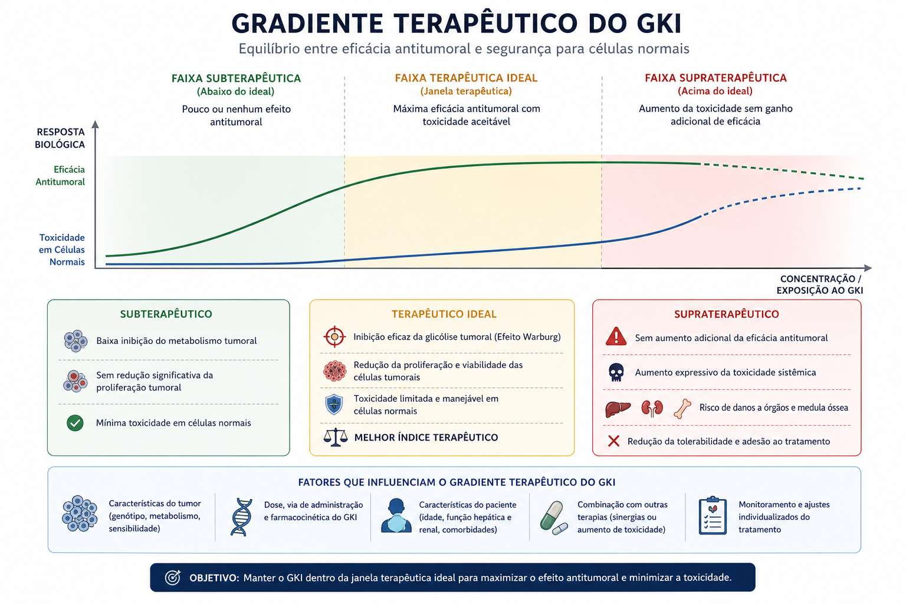
A revisão do M. D. Anderson Cancer Center demonstra que fatores de estilo de vida causam a vasta maioria dos cânceres — e que a inflamação crônica é o elo entre os agentes causadores e os agentes protetores.
25–30% das mortes por câncer. Maior fator de risco modificável.
30–35% dos cânceres ligados à alimentação. Frutas e vegetais são protetores-chave.
15–20% associados a agentes infecciosos: H. pylori, HPV, HBV.
Sedentarismo eleva risco. Exercício reduz inflamação sistêmica.
Excesso de adiposidade aumenta insulina, IGF-1 e citocinas pró-inflamatórias.
Estresse crônico suprime imunidade — ambiente favorável à progressão tumoral.
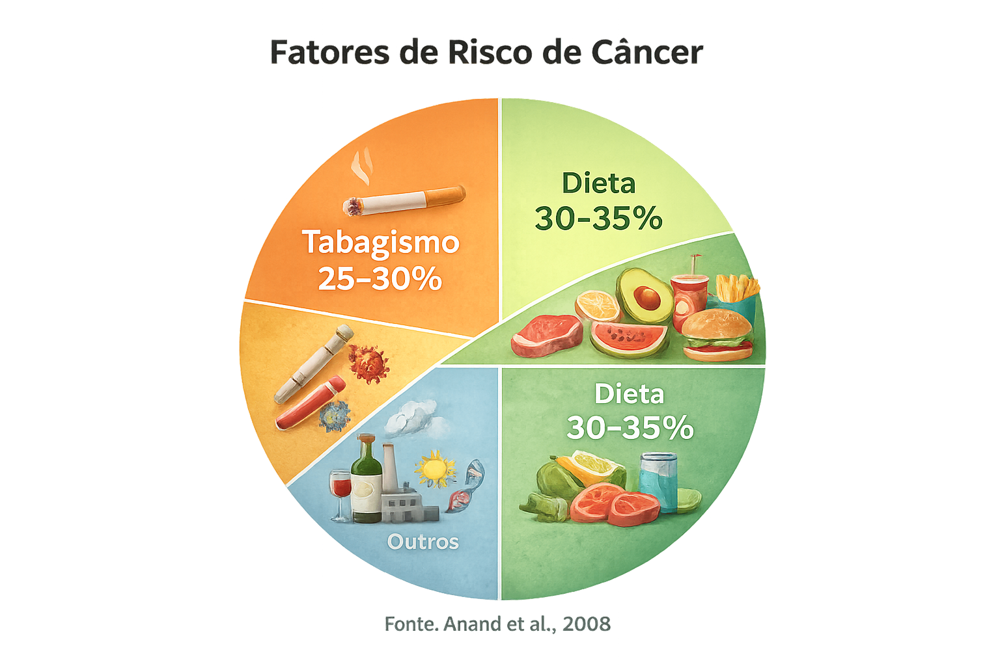
Este conjunto de materiais propõe uma mudança de perspectiva fundamental para sua formação clínica:
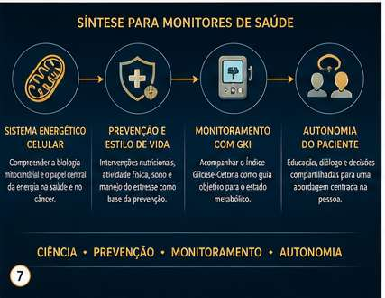
Tratar câncer apenas com visão genética é como consertar um carro trocando o painel sem verificar o motor. A abordagem metabólica olha para o sistema energético da célula.
Se 90–95% dos cânceres têm raízes modificáveis, a prescrição de estilo de vida é a intervenção mais poderosa — antes, durante e após o tratamento.
Medicina, enfermagem e engenharia biomédica podem quantificar e monitorar a intervenção metabólica com um único índice. Interdisciplinaridade aplicada.
A provocação de Seyfried e Erasmo converge: o profissional educado empodera o paciente com conhecimento real sobre seu próprio metabolismo. Cura te ipsum.
Cinco questões de múltipla escolha. Leia com atenção: algumas alternativas são parcialmente verdadeiras — o detalhe importa.
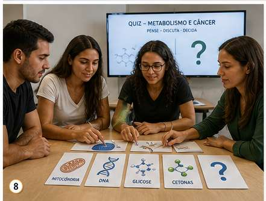
Estas questões não têm gabarito no final da página. São para discussão em grupo, para levar à supervisão, ou para deixar fermentar antes do próximo encontro.